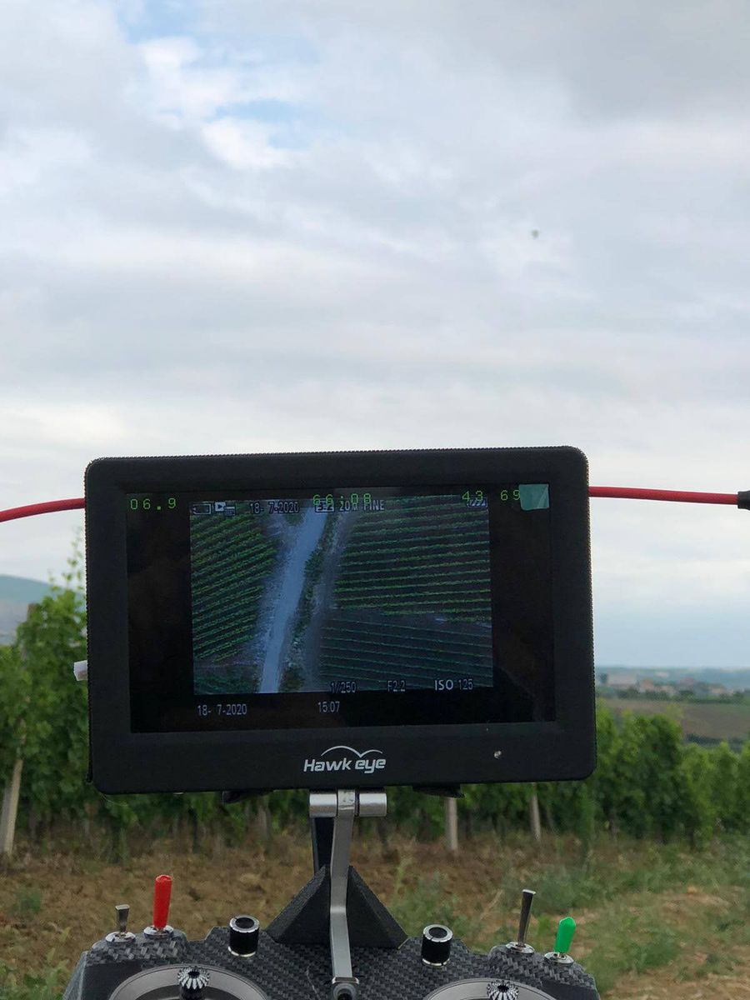

Home / Technology
Technology with a job to do.
UAV surveying, satellite data and the systems we build — chosen for the work, not for show.
Up to 1 cm/pixel from the air.
Geo&Land is a drone data collection provider. Our certified UAV operators control the process of data capture, analysis, archival and distribution — delivering aerial data quickly and more cost-effectively than ever before, using web map services. Whether the project is mapping, agriculture and forestry, mining and volume calculation, vegetation and crop diagnosis, oil and gas, infrastructure and utilities, or emergency and disaster response — our team can quickly and safely provide a UAV LiDAR survey at 1 cm/pixel resolution.
- Surveying
- Field control and mapping support for volume and progress work.
- Orthophoto
- Georeferenced, mosaic-ready aerial imagery.
- Point cloud
- High-density 3D capture from UAV LiDAR.
- DEM
- Digital elevation and surface models from the same flight.

Imagery for planning that has to hold up.
For the purpose of urban-spatial planning, Geo&Land offers aerial images and orthophotos for Kosovo, Albania and North Macedonia. To manage urban, development and legalization plans, we provide a GIS municipal portal — imagery and registers in the same system.
The only AIRBUS partner for the region.
Geo&Land proudly holds a partnership agreement with AIRBUS, covering cooperation in promoting, distributing and using AIRBUS products and services — from satellite optical and radar imagery to Agriculture Satellite Monitoring Services and OneAtlas. The agreement dates back to 2013, and Geo&Land continues to be the only AIRBUS partner for the Republic of Kosovo, Croatia, Albania and North Macedonia.
Territories — Kosovo · Croatia · Albania · North Macedonia
| Imagery | Swath | Revisit capacity | Resolution | Daily capacity |
|---|---|---|---|---|
| Pléiades Neo | 14 km | Twice daily, anywhere | 30 cm pan / 1.2 m MS | 2,000,000 km² |
| Pléiades | 20 km | Twice daily, anywhere | 50 cm pan / 2 m MS | 700,000 km² |
| Vision-1 | 20.8 km | Daily to 8 days | 0.9 m pan / 3.5 m MS | 20,000 km² |
| SPOT 6/7 | 60 km | Twice daily, anywhere | 1.5 m pan / 6 m MS | 6,000,000 km² |
| Radar Constellation | 4–270 km | Daily for most latitudes | 25 cm to 40 m | 5,400,000 km² |
| DMC Constellation | 640 km | Daily to every 2 days | 22 m | 22,000,000 km² |
| KazEOSat-1 (3rd party) | 20 km | 2–3 days | 1 m | 220,000 km² |
Source: Airbus Defence and Space product documentation, as published on geoland-kosova.com.
- Verde
- Crop analytics built on satellite and UAV imagery.
- AgNeo
- Decision support platform for precision farming.
- Farmstar
- Satellite and UAV agronomic advice through the crop cycle.
- Starling
- Monitoring for deforestation-free commodity production.
- Grassland Index
- Continuous grass growth monitoring for insurers and breeders.
Software in national service.
Geo&Land's software development department builds Web-GIS systems and registers on commercial and open source platforms — taking trade development and INSPIRE directives into account.
-
01
Kosovo Forest Information System (KFIS)
A system application that aims to enhance the strategy and policies in forestry in Kosovo — established as a permanent IT system for the sector.
-
02
Vineyard Cadastre & Wine Quality Control (SVV v1.3)
Unique application for vineyards and wines, built from the vineyard register project with the Ministry of Agriculture.
-
03
National Farmer and Payment System (SPFN)
Web-based farmer register and grant management, responsive across browsers and devices, with an Ajax-based interface.
-
04
Municipal GIS System
One of the first municipal GIS systems in Kosovo — geospatial and textual data presented together in one system.
-
05
Addressing System
Addressing system developed by Geo&Land, part of our register work for public institutions.
Tell us what you need surveyed, mapped or built.
N 42.6629° · E 21.1655°
Prishtina · Kosovo